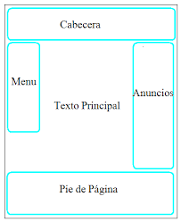

Etiquetas Semanticas Las etiquetas semánticas ayudan a definir la estructura del documento y permiten que las páginas web sean mejor indexadas por los buscadores. Una etiqueta se califica como semántica si tiene que ver el significado, es decir, si nos informa sobre lo que trata su contenido. Por ejemplo, la etiqueta SECTION nos dice que contiene una sección o capítulo dentro de la página. Frente a las etiquetas semánticas tenemos otros tipos de etiquetas como las que afectan al formato, como UL, a multimedia, como video, etc. Las etiquetas semánticas ayudan a la implementación de los estándares de la Web Semántica, cuya finalidad es hacer el contenido de internet legible para aplicaciones informáticas. Uno de los usos mas importantes de este tipo de etiquetas es la de marcar la información de la pagina para ser indexada por los buscadores web como Google. Algunos ejemplos de etiquetas semanticas pueden ser: header: Representa un grupo de ayudas introductorias o de navegación. También puede contener logos, formulario de búsqueda o tabla de contenidos nav: Sección de una página que enlaza a otras páginas o partes de la misma. Una sección con links de navegación. aside: Sección de una pagina que contiene contenido relacionado tangencialmente al de su alrededor. Por lo general se utilizan como barras laterales. main: Representa el contenido predominante de la página. Una página debe tener solo un tag main. Solo debe estar contenida por tags de tipo html, body, div o form. article: Representa una sección de contenido que puede ser distribuido de forma independiente. Puede ser un post en un foro, un articulo de periódico, una entrada de un blog, un comentario, etc. section: Representa a una sección genérica de una pagina. Agrupa contenidos que tienen una relación temática entre si. footer: Representa un pie de página para el elemento que lo contiene. Generalmente contiene información acerca de quién lo escribió, enlaces a documentos relacionados, datos de derechos de autor o similares. Dev(2016)Etuiquetas semanticas html5.Recuperado de: https://dev.to/sapardo/etiquetas-semanticas-de-html5-3j7m 